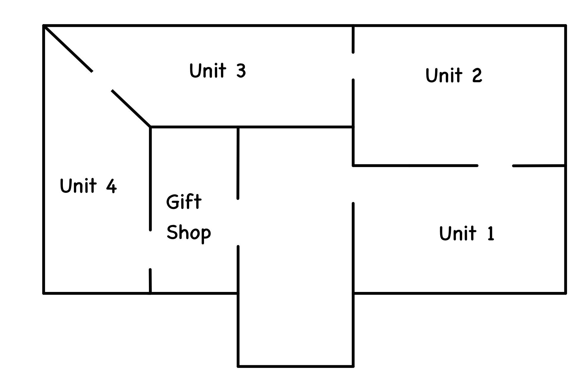

by Ryan Blackmore, Kyle Bradburn, and Andrew Lighty

Unit Summaries
Unit 1: This unit begins with the founding of America, the American revolution, and so on. This focus is rather brief, however. Then, the unit discusses the American Civil War and then goes over the period of reconstruction thereafter.
Unit 2: Discusses various eras of American history, such as the Industrial revolution and Progressive Era. As well, the growth of America through moving out west and expanding territory with events such as the Louisiana Purchase.
Unit 3: Divided into two sections, with the first focusing on the idea of imperialism and how the US expanded its imperialist tendencies. The second section focuses on World War I, both outside and inside the United States.
Unit 4: Primarily about the effects that World War I had on America, with a focus on the changes both socially and economically throughout the 1920s, ending on the Great Depression in the US.